Lecture 17: Alignment — RL 2
These notes provide a comprehensive overview of Policy Gradient methods in Reinforcement Learning, with a focus on their application to Language Models.
TL;DR
- Reinforcement Learning (RL) is key to surpassing human abilities in Language Models (LMs).
- Policy Gradient (PG) frameworks are conceptually clear, but practical implementation requires careful handling of high variance and changing data distributions.
- Baselines are crucial for reducing variance in PG updates without introducing bias. A common heuristic is to use the expected reward given the state, which relates to the advantage function.
- GRPO (Group Relative Policy Optimization) leverages the natural group structure in LM settings (multiple responses per prompt) to provide a natural baseline, simplifying PPO by removing the critic.
- Building and scaling RL systems for LMs is more complex than pre-training due to inference workloads, managing multiple models (policy, old policy, reference model, critic), and distributed execution.
Key Concepts
- Policy Gradient (PG)
- Reinforcement Learning for Language Models (RLHF)
- State, Action, Reward definitions in LMs
- Sparse Rewards
- High Noise/Variance in PG
- Baselines for variance reduction
- Advantage Function
- Group Relative Policy Optimization (GRPO)
- Importance Sampling
- KL Penalty
- Freezing Parameters
[00:00] Introduction and Course Context
The lecture begins by contextualizing its position within the course, noting it's one of the final lectures.
[00:20] Recap of Previous Lecture and Today's Focus
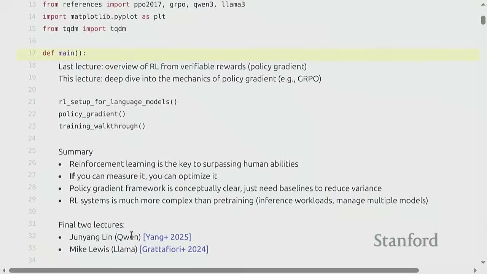
The previous lecture covered an overview of RL from verifiable rewards, including Policy Gradient (PG) algorithms like PPO and GRPO. Today's lecture will deep dive into the mechanics of PG, specifically GRPO. The goal is to go deeper into existing material, show code, and explain some of the underlying math.
[00:52] RL Setup for Language Models
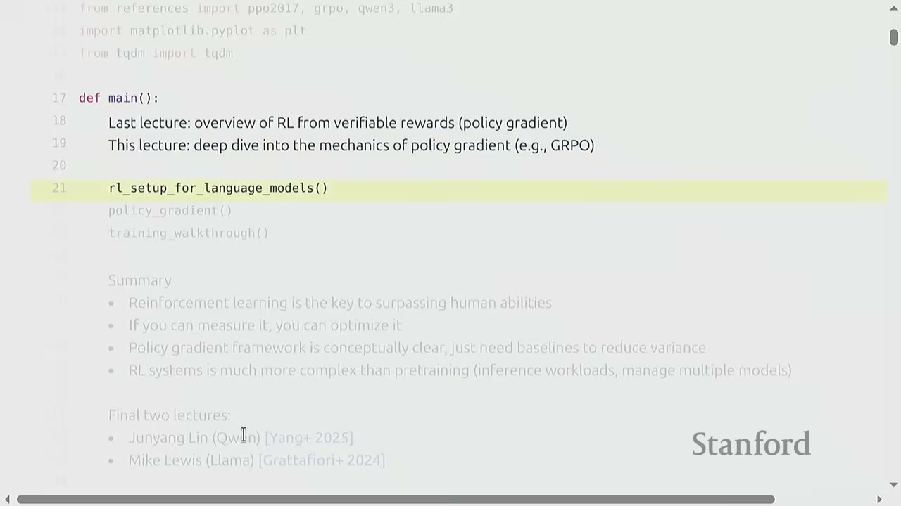
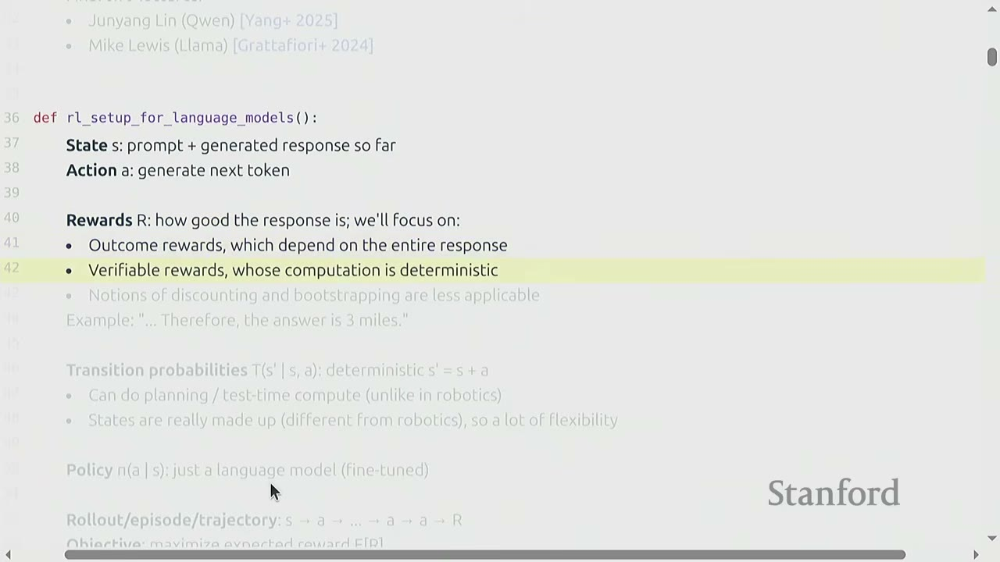
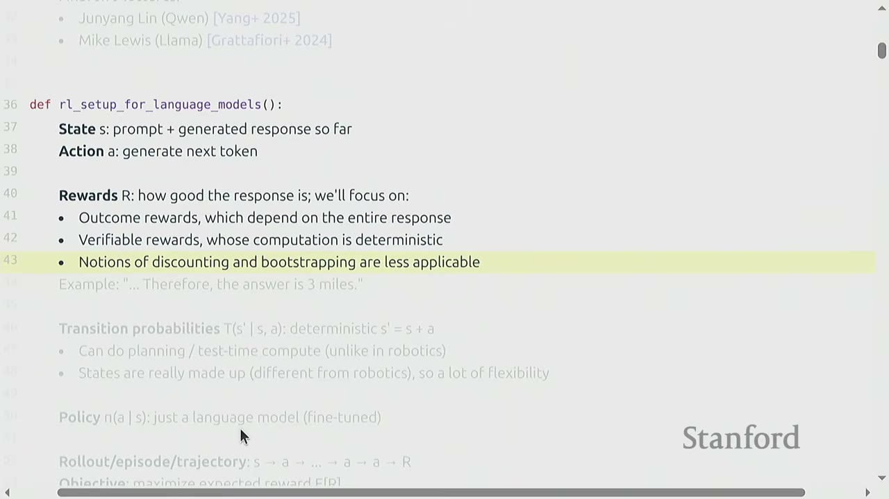
To clarify the RL framework in the context of Language Models:
- State (s): The prompt + the generated response so far.
- Action (a): Generating the next token.
-
Rewards (R): How good the response is.
- Outcome Rewards: Depend on the entire response.
- Verifiable Rewards: Computation is deterministic (e.g., a function returns a reward, no human labeling).
- Discounting and Bootstrapping: Less applicable here because rewards are typically given only at the end of a sequence of actions (sparse reward).
- Example: For a math problem, the reward is given only after the final answer is generated and checked against a ground truth.
- Sparse and delayed rewards introduce difficulties but simplify conceptual thinking.
-
Transition Probabilities (T(s'|s, a)): Deterministic: s' = s + a.
- This is a key difference from robotics, where transition dynamics are complex and often unknown. In LMs, the transition is simply appending the action (next token) to the current state.
- This determinism allows for planning or "test-time compute," which is a significant advantage over typical RL settings.
-
States are "made up": Unlike robotics where states are grounded in the physical world (joint angles, images), in LMs, states are just sequences of tokens.
- This introduces a lot of flexibility; the LM can generate its own "scratchpad" to derive answers. The challenge is not reaching a state, but ensuring the generated tokens lead to a correct answer.
- The speaker emphasizes that while it's all RL, the intuitions and challenges change significantly in the LM context.
-
Policy ($\pi$(a|s)): Just a language model (fine-tuned).
- The policy takes the current state (prompt + generated response) and outputs a distribution over possible next tokens.
-
Rollout/Episode/Trajectory: $s \rightarrow a \rightarrow a \rightarrow \dots \rightarrow a \rightarrow R$.
- A sequence of states and actions culminating in a single reward.
-
Objective: Maximize expected reward $E[R]$.
- The expectation is taken over prompts (given by the environment) and response tokens (generated by the policy).
[03:09] Policy Gradient
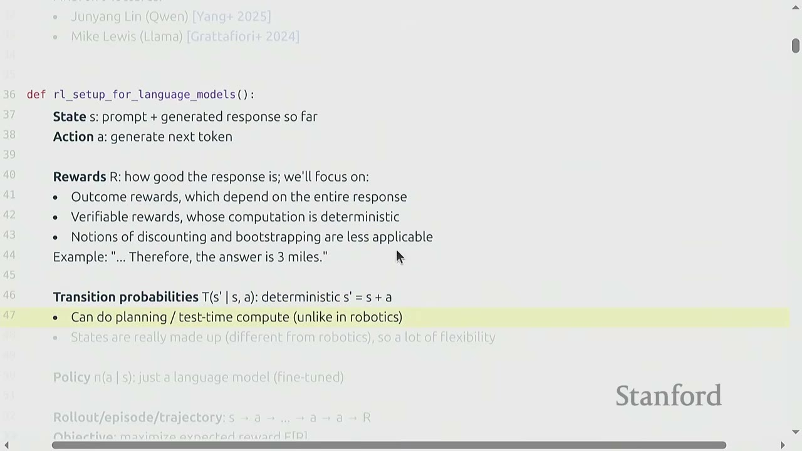
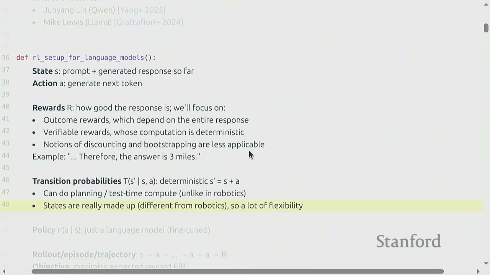
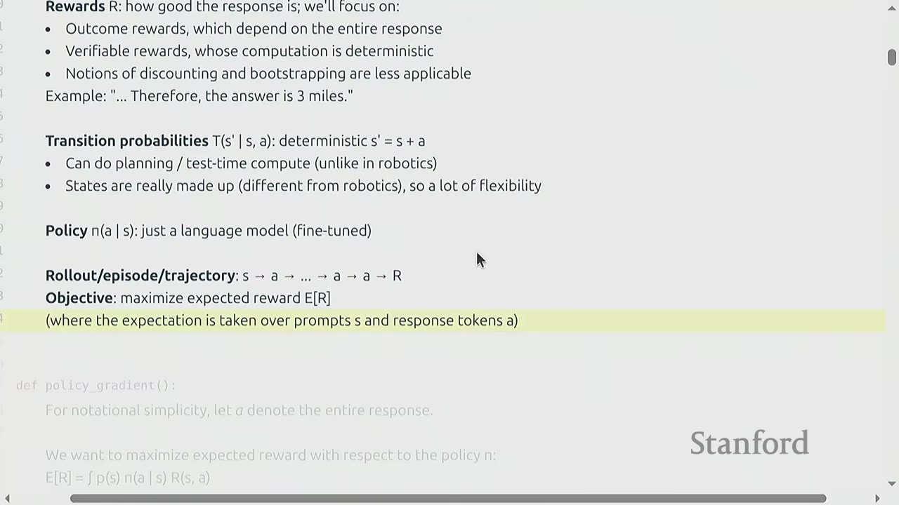
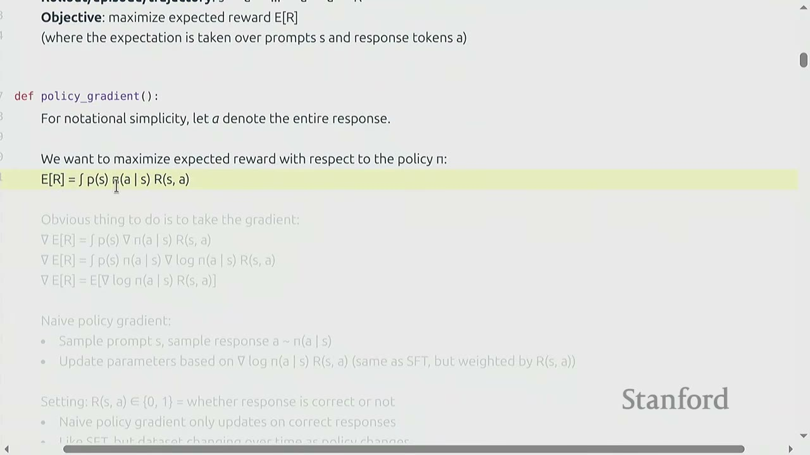
Policy Gradient (PG) refers to a class of methods for learning a policy by iteratively improving it using gradient ascent.
For notational simplicity, let $a$ denote the entire response (sequence of actions/tokens). This is valid in the outcome reward setting where the reward is given only at the end.
The objective is to maximize the expected reward with respect to the policy $\pi$: $$ E[R] = \int p(s) \pi(a|s) R(s,a) $$
The "obvious thing to do" is to take the gradient: $$ \nabla E[R] = \nabla \int p(s) \pi(a|s) R(s,a) $$ $$ \nabla E[R] = \int p(s) \nabla \pi(a|s) R(s,a) $$ Using the identity $\nabla \pi(a|s) = \pi(a|s) \nabla \log \pi(a|s)$: $$ \nabla E[R] = \int p(s) \pi(a|s) \nabla \log \pi(a|s) R(s,a) $$ This can be rewritten as an expectation: $$ \nabla E[R] = E[\nabla \log \pi(a|s) R(s,a)] $$ This form should be familiar from standard PG derivations.
[07:16] Naive Policy Gradient
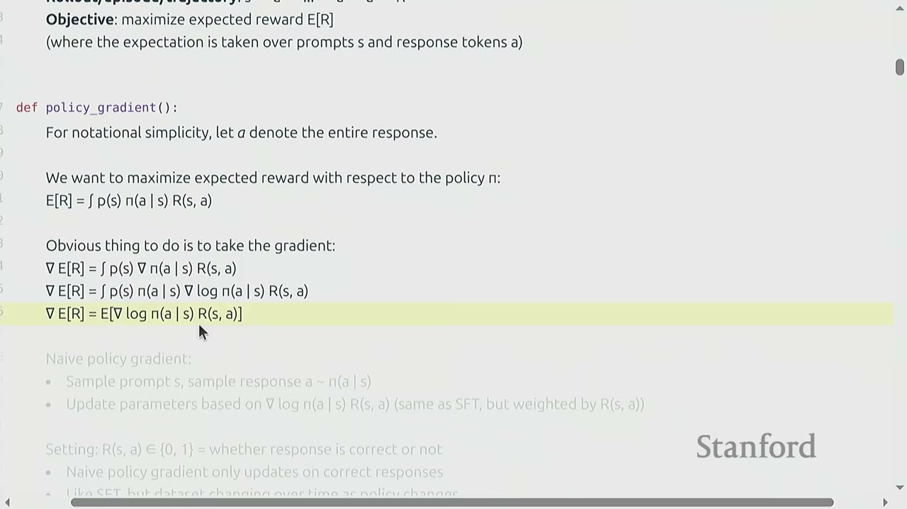
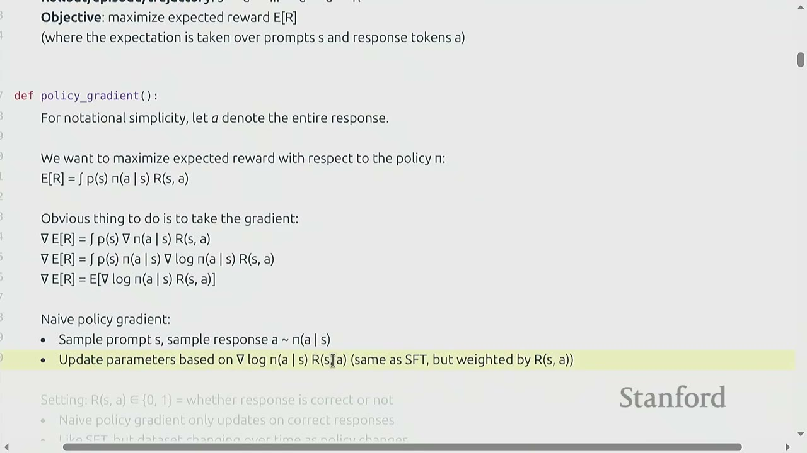
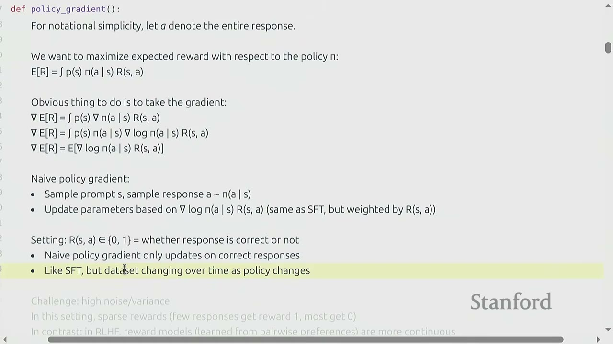
The naive policy gradient algorithm proceeds as follows: 1. Sample a prompt $s \sim p(s)$. 2. Sample a response $a \sim \pi(a|s)$. 3. Update parameters based on $\nabla \log \pi(a|s) R(s,a)$.
Interpretation: This is essentially the same as Supervised Fine-Tuning (SFT), but weighted by the reward $R(s,a)$. - In SFT, a human provides the correct response $a$, and the model is updated to maximize the probability of that $a$. - In PG, the model generates $a$, and the update is weighted by the reward.
Setting: Consider a binary reward $R(s,a) \in \{0, 1\}$, indicating whether the response is correct or not. - Naive PG updates only on correct responses: If $R(s,a) = 0$, the term $\nabla \log \pi(a|s) R(s,a)$ becomes zero, so no update is made. Only responses with $R(s,a) = 1$ contribute to the update, effectively performing SFT on correct responses. - Data set changing over time: Unlike traditional SFT, the data distribution from which responses are sampled changes as the policy $\pi$ evolves.
Challenge: High Noise/Variance - In this sparse reward setting (few responses get reward 1, most get 0), PG suffers from high noise and variance. - If the policy is so bad that it rarely generates correct responses, most updates will be zero, leading to slow or no learning. This is a "stuck" scenario. - In contrast, RLHF models (learned from pairwise preferences) often have more continuous reward models, providing denser feedback.
Question: Why is the data set changing over time? - Each iteration, the policy parameters are updated. The next time a response is sampled, it comes from the new policy, which has a different distribution. This means the "data" (trajectories) used for updates changes over time. - Intuitively, if the model can get some easy questions correct, it updates, and hopefully generalizes to slightly harder questions, leading to a gradual increase in reward over time.
Question: Why not make the reward -1 for incorrect responses? - This is a valid idea, and it's implicitly handled by using baselines, which will be discussed next.
[15:43] Baselines
Recall: $\nabla E[R] = E[\nabla \log \pi(a|s) R(s,a)]$ is an unbiased estimate of $\nabla E[R]$, but its variance can be high.
Example: Two States Consider a simplified MDP with two states (prompts) S1 and S2, and two actions A1 and A2 for each. - S1: A1 $\rightarrow$ Reward 11, A2 $\rightarrow$ Reward 9 - S2: A1 $\rightarrow$ Reward 0, A2 $\rightarrow$ Reward 2
The optimal policy would be to choose A1 in S1 (reward 11) and A2 in S2 (reward 2). However, if we only look at local rewards, A2 in S1 (reward 9) might seem better than A2 in S2 (reward 2). A naive PG update might push the policy towards A2 in S1 because 9 > 2, even though A1 is better in S1. This illustrates how local reward signals can be misleading without a broader context.
Idea: Maximize the baselined reward: $E[R - b(s)]$. - This involves subtracting a state-dependent baseline $b(s)$ from the reward. - This is just $E[R]$ shifted by a constant $E[b(s)]$ that doesn't depend on the policy $\pi$. - Therefore, maximizing $E[R - b(s)]$ is equivalent to maximizing $E[R]$. - The update rule becomes: $\nabla \log \pi(a|s) (R(s,a) - b(s))$. - This is valid for any $b(s)$ that does not depend on the action $a$.
Question: What $b(s)$ should we use? Let's revisit the two-state example. Assume a uniform distribution over $(s,a)$ and $|\nabla \log \pi(a|s)| = 1$ for simplicity. - Naive variance: Using the original rewards (11, 9, 0, 2), the variance is 5.32. - Define baseline: $b(S1) = 10$, $b(S2) = 1$. (These are chosen to be close to the average reward for each state). - Baseline variance: Subtracting the baseline, the new rewards are (1, -1, -1, 1). The variance is 1.15. - Variance reduced from 5.32 to 1.15. This demonstrates the power of baselines in reducing variance.
Optimal $b^*(s)$: The optimal baseline $b^*(s)$ that minimizes variance is given by: $$ b^*(s) = \frac{E[(\nabla \log \pi(a|s))^2 R(s,a)|s]}{E[(\nabla \log \pi(a|s))^2|s]} $$ - This is difficult to compute in practice. - Heuristic: A common heuristic is to use the mean reward: $b(s) = E[R|s]$. - This is still hard to compute and must be estimated.
[26:28] Advantage Functions
The choice of $b(s) = E[R|s]$ has connections to advantage functions in RL. - Value function V(s): $E[R|s]$ = expected reward from state $s$. - Q-function Q(s,a): $E[R|s,a]$ = expected reward from state $s$ taking action $a$. - Note: Q and R are the same here because we're assuming outcome rewards and $a$ has all actions. In general, R would be the return from that state, not just a single reward.
- Definition (Advantage): $A(s,a) = Q(s,a) - V(s)$.
- Intuition: How much better is action $a$ than expected from state $s$?
- If $b(s) = E[R|s]$, then the baselined reward is identical to the advantage!
- $(R(s,a) - b(s)) = (R(s,a) - E[R|s]) = A(s,a)$.
- In general: The update rule is $E[\nabla \log \pi(a|s) \delta]$, where $\delta$ is an advantage-like quantity.
- There are multiple choices for $\delta$, as we'll see later. (Refer to CS224R lecture notes for more derivations).
[30:10] Training Walkthrough
The walkthrough will use Group Relative Policy Optimization (GRPO) from Shao+ 2024. - Simplification to PPO: GRPO removes the critic (value function). - Leverages group structure: The LM setting (multiple responses per prompt) provides a natural baseline $b(s)$. - The ability to generate multiple responses for a single prompt creates a "group" of trajectories. This group structure is leveraged to compute a natural baseline (e.g., the average reward within the group), which helps reduce variance. - If every rollout looked different (no natural group structure), GRPO wouldn't make sense, and a value function would typically be used instead.
[33:00] GRPO Algorithm (Pseudocode)
The pseudocode for GRPO is presented (Algorithm 1: Iterative Group Relative Policy Optimization). 1. Initialize policy model $\pi_{\theta_{init}}$, reward models $r_{\phi_i}$, task prompts $D$, hyperparameters $\epsilon, \beta, \mu$. 2. For iteration $l = 1, \dots, M$ do: 3. Reference model $\pi_{ref} \leftarrow \pi_{\theta_l}$. 4. For step $s = 1, \dots, M$ do: 5. Sample a batch $D_b$ from $D$. 6. Update the old policy model $\pi_{\theta_{old}} \leftarrow \pi_{\theta_l}$ for each question $q \in D_b$. 7. Sample $G$ outputs $o_1^q, \dots, o_G^q$ for each sampled output $o_i^q$ by running $\pi_{\theta_l}$. 8. Compute rewards $r_i^q$ for $o_i^q$ through group relative advantage estimation. 9. For GRPO iteration $t = 1, \dots, \mu$ do: 10. Update the policy model $\pi_{\theta_l}$ by maximizing the GRPO objective (Equation 21). 11. Update $\pi_{\theta_l}$ through continuous training using a replay mechanism. 12. Output $\pi_{\theta_l}$.
[34:39] Simple Task Definition
A simple task is defined to demonstrate the concepts: sorting n numbers.
- Prompt: n numbers (e.g., [1, 0, 2]).
- Response: n numbers (e.g., [0, 1, 2]).
- Reward: Should capture how close to sorted the response is.
Reward Function Choices:
1. Exact Match Reward: Returns 1 if the response is perfectly sorted (matches ground truth), 0 otherwise.
- This is a sparse reward, leading to high variance and slow learning if the initial policy is poor.
2. Partial Credit Reward (Inclusion Reward): Returns the number of positions where the response matches the ground truth.
- Example: [1, 0, 2] sorted is [0, 1, 2].
- [0, 1, 2, 3] $\rightarrow$ reward 4 (perfect match).
- [3, 1, 0, 2] $\rightarrow$ reward 1 (only '2' is in the correct position).
- [0, 3, 1, 2] $\rightarrow$ reward 1 (only '0' is correct).
- This is still somewhat sparse.
3. Partial Credit Reward (Inclusion + Ordering Reward):
- Gives 1 point for each token in the prompt that shows up in the response.
- Gives 1 point for each adjacent pair in the response that's sorted.
- Example: [1, 0, 2] sorted is [0, 1, 2].
- [0, 1, 2, 3] $\rightarrow$ inclusion reward 4, ordering reward 3 $\rightarrow$ total 7.
- [3, 1, 0, 2] $\rightarrow$ inclusion reward 3, ordering reward 0 $\rightarrow$ total 3.
- [0, 3, 1, 2] $\rightarrow$ inclusion reward 4, ordering reward 2 $\rightarrow$ total 6.
- This provides more continuous feedback, which is generally better for RL. The second reward function (inclusion + ordering) will be used for the walkthrough.
[37:28] Simple Model Definition
A simple model is defined to solve the sorting task: - Assumes fixed prompt and response length. - Captures positional information with separate per-position parameters. - Decodes each position in the response independently (not autoregressive). This simplifies the code significantly.
Model Architecture:
- nn.Embedding for vocabulary.
- For each position, a matrix for encoding and a matrix for decoding.
- einsum is used for transformations.
Forward Pass:
1. Embed the prompts into [batch, pos, dim] embeddings.
2. Transform per-prompt position matrix, collapse into one vector: encoded = einsum(embeddings, self.encode_weights, "batch pos dim1, pos dim1 dim2 -> batch dim2"). This effectively sums out the position and dim1, resulting in a single vector per batch.
3. Turn into one vector per response position: decoded = einsum(encoded, self.decode_weights, "batch dim2, batch pos dim1 -> batch pos dim1"). This applies a position-specific matrix to the encoded vector.
4. Convert to logits (input and output share embeddings): logits = einsum(decoded, self.embedding.weight, "batch pos dim1, vocab dim1 -> batch pos vocab").
[41:16] Generating Responses
The generate_responses function takes prompts, the model, and the number of responses to generate.
- It samples num_responses independently for each [batch, pos] from the model's logits using torch.multinomial.
- The sampled responses are then reshaped to [batch, trial, pos].
[41:16] Computing Rewards and Deltas
- Compute Rewards: The
compute_rewardfunction iterates through each prompt and each generated response, calling the defined reward function (e.g.,sort_inclusion_ordering_reward). - Compute Deltas: The
compute_deltasfunction takes the rewards and converts them into the $\delta$ values for updates.rewardsmode: $\delta = R$. This is the naive PG.centered_rewardsmode: $\delta = R - \text{mean}(R)$. The mean is computed over all responses for each prompt.- If all rewards for a prompt are the same, $\delta$ will be 0, meaning no update. The intuition is that if all generated responses are equally good (or bad), there's no signal to favor one over another.
normalized_rewardsmode: $\delta = (R - \text{mean}(R)) / \text{std}(R)$. This normalizes the centered rewards by their standard deviation. This makes the updates invariant to the scale of the reward.max_rewardsmode: $\delta = R$ if $R$ is the maximum reward for the batch, 0 otherwise. This is an "all or nothing" approach, focusing only on the best responses.
[47:46] Computing Log Probabilities
The compute_log_probs function calculates the log probabilities of the generated responses under the current model.
- It passes the prompts through the model to get logits.
- Converts logits to log probabilities using F.log_softmax.
- Indexes into these log probabilities using the generated responses to get the specific log probability for each token in each response.
[49:33] Computing Loss
The compute_loss function calculates the loss to update the model parameters.
- naive mode: loss = -einsum(log_probs, deltas, "batch trial pos, batch trial -> batch trial").mean(). This is the basic PG update: $\nabla \log \pi(a|s) \delta$.
- clipped mode (GRPO/PPO-like):
- This involves computing a ratio of current log probs to old log probs (unclipped_ratios = log_probs - old_log_probs).
- This ratio is then clipped between 1 - epsilon and 1 + epsilon.
- The clipped ratio is multiplied by deltas.
- The minimum of this clipped term and another term (related to the unclipped ratio) is taken.
- This ensures that the policy doesn't deviate too much from the old policy in a single update.
- The negative sign is for converting reward maximization into loss minimization.
[50:55] Freezing Parameters
Motivation: In GRPO, you'll see ratios like $\pi(a|s) / \pi_{old}(a|s)$. It's important to freeze and not differentiate through $\pi_{old}$.
- Toy Example: If w drives both p (current policy) and p_old (old policy), and you compute ratio = p / p_old and then ratio.backward(), the gradient grad.w will be 0 if p_old is not frozen.
- Correct Way: To treat p_old as a constant, use with torch.no_grad(): p_old = torch.nn.Sigmoid(w). This allows getting the value of p_old without building a computation graph for it.
[51:59] KL Penalty
Sometimes, an explicit KL penalty is used to regularize the model. - The KL divergence between two distributions $P$ and $Q$ is $KL(P||Q) = E_{x \sim P}[\log(P(x)/Q(x))]$. - This can be rewritten as $E_{x \sim P}[\log(P(x)) - \log(Q(x))]$. - If we want to estimate $KL(\pi_{\theta}||\pi_{ref})$, we can sample from $\pi_{\theta}$ and compute $E_{a \sim \pi_{\theta}}[\log \pi_{\theta}(a|s) - \log \pi_{ref}(a|s)]$. - An alternative estimate for $KL(\pi_{\theta}||\pi_{ref})$ is $E_{a \sim \pi_{\theta}}[\frac{\pi_{ref}(a|s)}{\pi_{\theta}(a|s)} (\log \pi_{\theta}(a|s) - \log \pi_{ref}(a|s))]$. This particular estimate can have lower variance. - The math works out because $E_{a \sim \pi_{\theta}}[\frac{\pi_{ref}(a|s)}{\pi_{\theta}(a|s)}] = 1$.
[53:38] Summary of Components
So far, the components needed for the GRPO algorithm are: - Generate responses. - Compute rewards $R$ and $\delta$ (rewards, centered rewards, normalized rewards, max rewards). - Compute log probs of responses. - Compute loss from log probs and $\delta$ (naive, unclipped, clipped). - Freezing parameters.
[53:48] GRPO Algorithm (Full Code)
The full run_policy_gradient function is presented, implementing the GRPO algorithm.
Outer Loop (Epochs):
- Iterates num_epochs times.
- If KL penalty is used, the reference model (ref_model) is updated every few epochs by cloning the current model. This ref_model is used for the KL penalty.
Inside the Epoch Loop:
1. Sample responses and evaluate their rewards:
- responses = generate_responses(...)
- rewards = compute_reward(...)
- deltas = compute_deltas(...) (mode can be rewards, centered_rewards, normalized_rewards, max_rewards).
-
Compute log probs under the reference model (if KL penalty is used):
ref_log_probs = compute_log_probs(..., model=ref_model)(withtorch.no_grad()to freezeref_model).
-
Compute log probs under the current model:
log_probs = compute_log_probs(...)
-
Take a number of steps (
num_steps_per_epoch) to update the model:- This inner loop performs multiple gradient steps using the same set of generated responses.
loss = compute_loss(...)(mode can benaive,unclipped,clipped).- If KL penalty is used,
loss += kl_penalty * compute_kl_penalty(...). - Backpropagate and update parameters:
optimizer.zero_grad(),loss.backward(),optimizer.step().
[59:59] Experiments
The code then runs some experiments using the defined task and model.
Example Walkthrough:
- The output of a run is shown, detailing the prompt, generated responses, log probabilities, rewards, and deltas at each step.
- Prompt: [1, 0, 2]
- Responses: Initially, the model generates random sequences.
- Rewards: The sort_inclusion_ordering_reward is used.
- Deltas: Initially, deltas are 3.0 for all responses (as all rewards are 3.0 in this specific run due to fixed random seed).
- Centering: When centering is applied, deltas become 0 if all rewards are the same. This means no update is made.
- Normalization: Normalization makes the updates invariant to the scale of the reward.
- max_rewards: Only the responses with the maximum reward contribute to the update.
Observation: If all generated responses for a prompt have the same reward, centered_rewards will be 0, leading to no updates for that prompt. This is a design choice in GRPO, as it assumes there's no signal to favor one response over another within that group.
Freezing Parameters (Important for GRPO/PPO):
- In GRPO/PPO, you often see ratios like $\pi(a|s) / \pi_{old}(a|s)$. It's crucial to freeze $\pi_{old}$ and not differentiate through it.
- Toy Example: If w drives both p (current policy) and p_old, and you compute ratio = p / p_old and ratio.backward(), the gradient grad.w will be 0 if p_old is not frozen.
- Correct Way: Use with torch.no_grad(): p_old = torch.nn.Sigmoid(w). This allows getting the value of p_old without building a computation graph for it.
KL Penalty:
- The KL penalty is used to regularize the model, preventing the new policy from deviating too much from a reference policy.
- The compute_kl_penalty function estimates $KL(\pi_{\theta}||\pi_{ref})$.
Training Loop:
- The outer loop iterates over epochs.
- Inside, responses are generated, rewards and deltas are computed.
- If KL penalty is used, a ref_model is cloned from the current model every few epochs and used for regularization.
- The inner loop iterates num_steps_per_epoch times, performing gradient updates using the computed loss. This is where the model learns from the generated responses.
Results: - The training is run for 100 epochs, with 10 steps per epoch. - Naive PG: The train loss decreases, and mean reward increases, but the loss curve is very noisy. - Centered Rewards: The train loss is less noisy, and mean reward increases more smoothly. - Normalized Rewards: Similar to centered rewards, but potentially more stable.
Final Observations from the run:
- The model struggles to perfectly sort the numbers, even with partial credit.
- The sort_inclusion_ordering_reward is a double-edged sword: it provides more signal, but the model might get "stuck" in a local optimum where it's happy generating partially correct answers, but not fully sorted ones.
- The model often produces numbers that are present in the prompt but not in the correct order.
- The loss curves can be misleading. A decreasing loss doesn't always mean the model is improving in a meaningful way, especially when the data distribution is changing.
[1:13:24] Summary and Practical Takeaways
- Reinforcement Learning is the key to surpassing human abilities: Labeled data only allows mimicking existing behavior. RL enables learning beyond human demonstration.
- If you can measure it, you can optimize it: The core idea of RL is to define a reward function and then optimize the policy to maximize it.
- Policy Gradient framework is conceptually clear: Define objective, subtract baseline to reduce variance, estimate gradient.
- RL systems are much more complex than pre-training:
- Inference workloads: Generating responses from the LM is computationally expensive.
- Manage multiple models: You need to keep track of the current policy, old policy (for importance sampling/clipping), and reference policy (for KL regularization).
- Distributed execution: RL often requires parallelizing environment interactions, inference, and training across multiple machines.
Practical Takeaways
- Variance Reduction is Key: Baselines are essential for making Policy Gradient methods practical, especially with sparse rewards.
- Reward Design Matters: The choice of reward function (sparse vs. dense, exact vs. partial credit) profoundly impacts learning stability and efficiency. Dense, well-shaped rewards are generally preferred.
- Understanding GRPO/PPO Mechanics: These algorithms use importance sampling and clipping to stabilize updates and prevent large policy shifts, which is crucial when the data distribution changes.
- Computational Complexity: RL for LMs is resource-intensive, requiring careful management of inference, multiple models, and distributed systems.
Open Questions / Things to Remember
- Credit Assignment Problem: How do we correctly attribute reward to individual actions in a long sequence, especially when rewards are sparse? This is a fundamental challenge in RL.
- Reward Hacking: How to design reward functions that truly capture desired behavior without being "hackable" by the agent (i.e., finding unintended ways to maximize reward)?
- Balancing Exploration and Exploitation: How to ensure the policy explores enough to find better strategies while also exploiting known good strategies?
- Stability of RL Training: The changing data distribution and high variance make RL training notoriously unstable and sensitive to hyperparameters.
- The "Lie" of Loss Curves: In RL, monitoring loss over time can be misleading because the underlying data distribution (generated responses) is constantly changing. Reward metrics are often more indicative of progress.